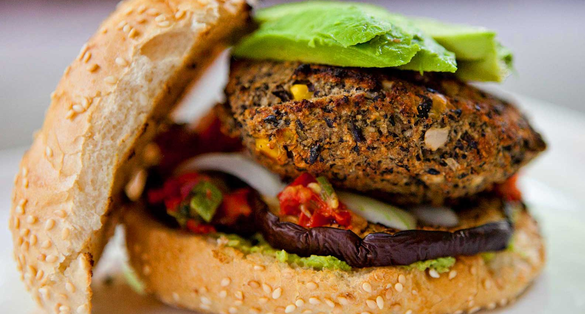

Foodies...
Blog dedicado a los amantes de
la comida y el buen gusto

¿Cuál es tu plato/comida favorito?
20 de Abril de 2018
Pues eso, esa comida que aunque estando lleno no la rechazarias, esa que puedes comer hasta reventarte, pero morir sonriendo, esa que no importa si se te cae al piso ,de todas formas te la comes (ok ya creo que exagere).
La mia es: pizza y sushi.

Lider: uffff, incluye los hot dogs, las hamburguesas, la pasta, la lasaña, el helado, las donas y el chocolate en esa lista por favor.

Mamilla: lo mas rico es siempre lo mas dañino para la salud.
Hamburguesa Vegana
26 de Abril de 2018
Un clásico americano con una pinta increíble. La hamburguesa vegana es rica en proteínas, fibra, hierro, calcio y potasio, componentes necesarios en toda dieta equilibrada, gracias a los frijoles negros que sirven de sustituto de la carne roja.
Venraag: excelente opción saludable a una comida americana. También se pueden hacer con champiñones portobello o lentejas. En cualquiera de los dos casos, la hamburguesa es deliciosa.
Toyita: quiero cinco, ¿dondé las puedo comprar?
Dulce: mañana se las preparo a mis nietos